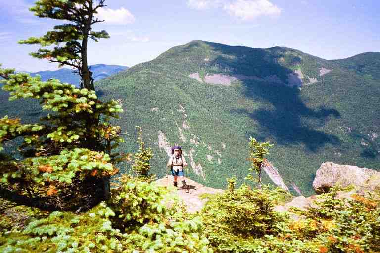
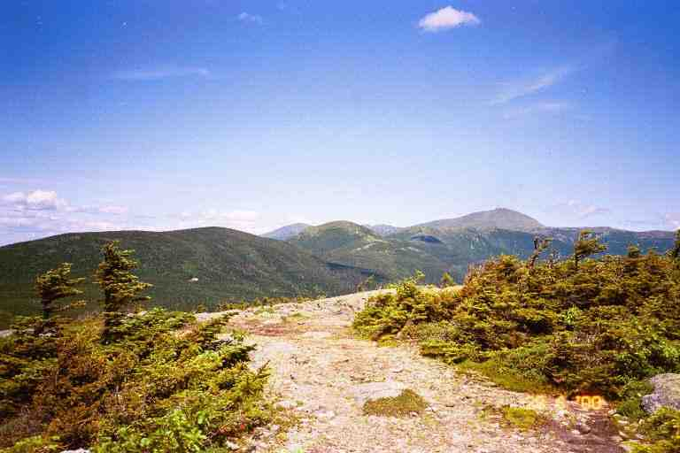
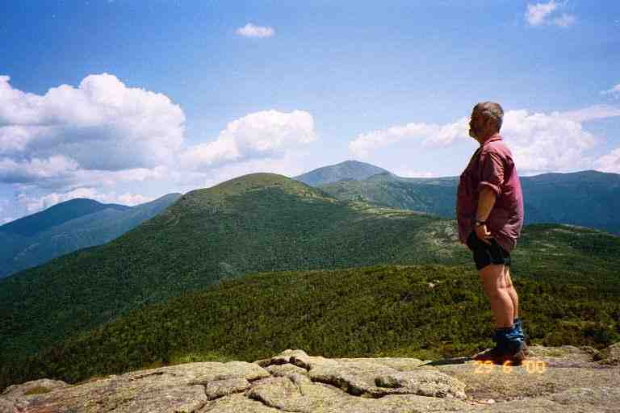
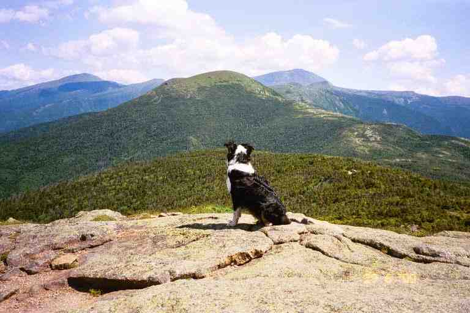
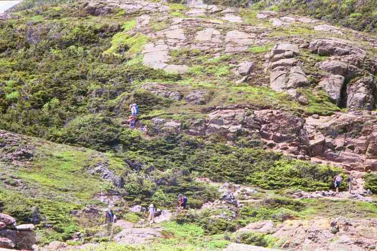
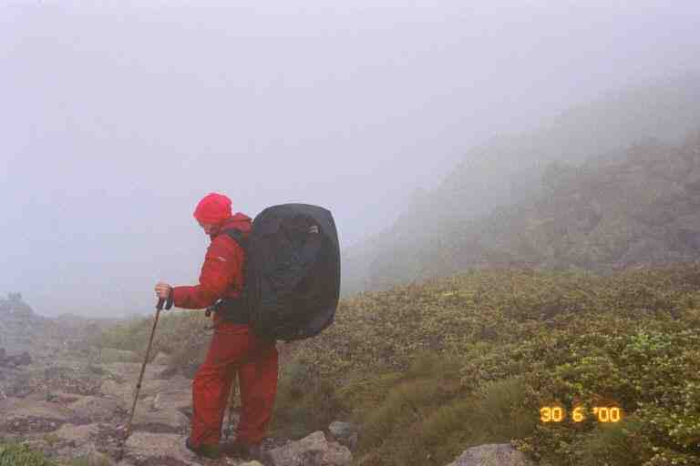
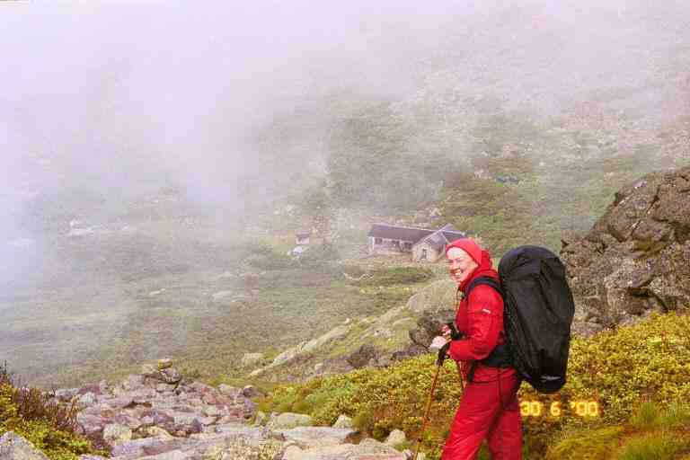

We were up early on June 28 and left Ethan Pond Campsite by 6 a.m. The trail was all downhill and mostly easy as we walked on an actual path which made its way through lush woods. We dropped 1800 feet with many switchbacks as we covered the 3 miles to US302 at Crawford Notch in about 1.5 hours. We crossed a railway track and then soon came out of the woods at a paved trailhead parking lot.
We followed a paved road down to the highway, which we crossed and then took a break at the side of the road next to the bulletin board with the AMC shuttle times. The shuttles enabled hikers to get back to their vehicles, without having to retrace their steps. We felt pretty good after yesterday's short day and we had made good time coming down. It was not yet 8 a.m. and we only had about 6.5 miles to Mizpah Hut. There was going to be a pretty good climb of 3500 feet for the first 3 miles to the top of Mount Webster but the rest seemed relatively easy.
The trail started level as we first crossed a stream, then within a few minutes we started a short gradual climb which essentially lead us to the base of the mountain. The trail suddenly became steep. Unlike most of the climbs so far in the Whites, we were on a path and not climbing a rock field. The path was very narrow and hugged the side of the wooded mountain. The ground was mostly soft, and had worn down to rocks and roots in spots. After an hour or so we met a father and two young sons coming down who told us we still had a long tough climb ahead of us.
Every once in a while we would come to a dead end at a boulder and have to climb up rocks to get to the next level. The trail sometimes came out into the open at the edge of a cliff, and gave us a view straight down to Crawford Notch with the highway going through it and the railroad track parallel and a little above it in the woods. We had some sense of our progress, by the changing location of landmarks below.

After 3 hours we thought we were at the top of Webster and were pretty proud of ourselves for our 1 mph speed. It turns out we were only on one of a number of false summits and we did not get to the summit until 2 hours later. The confusion was understandable. When you get high up, with mountains in all directions around you, it is difficult to tell if the nearby summit is part of the mountain you are climbing or the summit of another mountain.
At one point, we climbed up some flat rocks and came over the lip of the hill onto a level rocky area with stunted trees, low vegetation, lichen and mosses. It was clear to see that the vegetation on this exposed plateau was at the mercy of the elements. We took a break and I searched in this open area for a spot to take care of business. The best I could manage was a partially concealed spot near some bushes, where I moved aside a large rock and then replaced it when finished.
About 1.4 miles beyond Mount Webster was Mount Jackson. We could see and hear people up there as we got closer. The summit of Mount Jackson was only 200 feet higher than Mount Webster, and there was only a small dip between them, so the climb should not have been too bad. However, the peak of Mount Jackson was essentially a pile of boulders of all shapes and sizes, and we ended up mountain climbing up to the top. It was a very difficult climb and it brought us above the 4000 foot level. We met a young SOBO couple at the top. They were late as they had done a work-to-stay at Mizpah Spring Hut.
From here we could see Mizpah on the side of Mount Pierce, and beyond that many of the peaks of the Presidentials, including the highest, Mount Washington, which was easily identifiable by the puff of black smoke near the summit from the cog railway. It was a short but steep descent down off Jackson and it was a pretty easy 1.7 miles walk from there to Mizpah Hut. This last section included a couple of swampy alpine meadows covered with flowers, where we walked on muddy boggy bridges.

Nauman Tentsite is in the woods adjacent to Mizpah hut, so we had a couple of options for the night. We talked to the croo at 3:30 when we arrived and would wait until after dinner to see if work-to-stay was available. If not, we would tent. We relaxed in the large dining room with coffee, lemonade and snacks, and talked with a few guests. We met two friendly NOBO brothers from Maine named ACROBAT and CAPTAIN, who were taking a break and then heading on. There was a steady stream of guests arriving and being assigned rooms, including quite a few families.
We set our damp shirts and socks to dry in the sun and then stretched out to warm ourselves on a couple of large boulders adjacent to the hut. We had interesting conversations with a number of guests and listened to trail stories from two SOBO's in their 40's. One was from Georgia and was named Vedeliah (a kind of onion). He and his partner had made reservations at huts for the Whites' portion of their thru hike. There was a family group next to us that included two siblings and their spouses and three small children. One couple was Melissa and Brandon and they asked us many questions about the trail. We stayed outside for a while when the guests went in for supper. We spoke briefly with another couple named Cleo and Michael, who I first thought were thru hikers. He was a thin man with long grey hair and a long scraggly beard and she had a hippie look with long braided hair and wore a native style poncho. They were only out for a few days and would be staying at the campsite. There were also two dejected looking men waiting outside with us. They had hiked up the mountain with camping gear to stay at the campsite but had brought no food because they thought that the hut provided meals. They were exhausted from their hike and were waiting in the hope there would be food left.
Later MA and I waited in the library on the second floor overlooking the dining room. We read entries from our friends in the hut's 1999 register. After the meal and dishes, we got the good news about the work-to-stay. We went to the kitchen and took what we could of the meagre left-overs, sharing with the croo and the two other hikers (who paid $12 each for their meal). One of the croo was a young man from Nova Scotia.
After supper we socialized with guests and played cribbage with Melissa and Brandon. We had a wonderful time. The croo told us that there were no vacancies in the bunk rooms (we found out later that there were a few empty bunks), and brought us up to the storage room on the third floor. We found two free standing wobbly bunks in the middle of a room cluttered with tools, hardware, paint, costumes and all kinds of other paraphernalia. The two bottom bunks were occupied, one by a young woman biologist from France, who was doing a project for the AMC in the Whites. The beds rocked from side to side when we climbed up to the top bunks.
Our work assignment the next morning after breakfast was sweeping all the bunk rooms and toilets on the second floor and then washing all the baking pans, cookie sheets, serving trays, and casseroles in the kitchen (wash, rinse in bleach solution, rinse in clear water). The croo seemed a little uncomfortable around us, maybe they found it awkward to be in charge of people so much older than them. We left at 10:30 a.m. after a tough 2 hours of work, but it had paid for our meals and beds.
This was going to be a low mileage day, 4.8 miles to Lake of the Clouds Hut located just below the summit of Mount Washington. We began with a short strenuous climb up a couple of steep narrow wooded sections on a rocky path, requiring lots of use of hands. This brought us to the mostly bare rock summit of Mount Pierce. We sat on the large flat boulder, looking out towards our destination for the day: Mount Eisenhower, Mount Franklin and Mount Washington. All of a sudden three dogs came up over the lip of the boulder and ran to greet us. I think they were Australian collies. They were with a very fit young woman who was out here day hiking. At one point, one of the dogs walked over to the edge of the cliff and sat admiring the view ..


The rest of the day's hiking was above tree line, with mostly moss and lichen, and with stunted shrubs in some of the lower areas. We were surprised to find out that the AT stayed on the Crawford Path going around Mount Eisenhower, rather than climbing the appropriately bald rocky top. We then climbed the much lower adjacent Mount Franklin and took a break. To our left we could see Melissa and Brandon and the rest of their family, slowly negotiating the rocky switchback trail down off Mount Eisenhower.

As we sat there relaxing, watching the smoky engines climbing and descending Mount Washington, a few miles in front of us, we were joined by a young teenage boy with blue hair. He had been at Mizpah with his parents and younger sister and was on his way to Lake of the Clouds. He was really excited about the beautiful scenery and rugged landscape. We later met his parents who were communicating with each other by FRS radios and were trying to find him. They were glad to get our news of him and the mother was pleased about his enthusiasm as he had not been interested in this family trip.
We continued through this barren landscape slowly climbing as we went. There were a number of small signs warning about some of the rare fragile plants and advising to stay on the trail, which in many such places was lined on both sides with small rocks. We kept climbing, eventually contouring Mount Monroe and then dipping slightly as we came to the Hut at 3:00p.m.
***********
SINGLEMALT describes the day's terrain and the area around the hut as follows:
*** " The walk from Mizpah to Lake of the Clouds was along the Presidential Ridge, also called the Presi-Traverse, and which comprises Mt. Monroe, Mt. Jackson, Mt. Eisenhower, Mt. Washington, Mt. Madison, Mt. Jefferson, and a few others. The 5-mile ridge walk to Lake of the Clouds is all above tree line, and the weather was clear and nearly 70°, almost unheard of in the presidentials. Lake of the Clouds sits at about 5000', and about one mile below the summit of Mt. Washington. On average, only 3 days out of 10 are clear here, with clouds covering those summits the rest of the time. Some of the worst weather in the world rips through here.... The landscape here is rugged beyond description. There are no shrubs, only mosses and lichen-covered rocks, which give a greenish hue to everything." ***
He also talks about the Hut: *** " Lake of the Clouds Hut is the largest and most popular of the AMC huts, and is capable of holding 90 guests. It's also one of the easiest to get to, being so close to the summit of Mt. Washington. Therefore, it is usually full to capacity......... Many of the huts in the White Mountains are haunted, and Lake of the Clouds is no exception. One story is of a pair of boots, which belonged to a hiker who was killed on the mountain after hiking thousands of miles all over the world. The boots are nailed to the wall of the croo's bunkroom, but occasionally are found outside the hut near the trailhead, ready to walk on their own. Another story tells of a plumber working under the sink in the kitchen. He had his dog with him, and the dog started barking frantically. Finally the plumber came out from under the sink to see what the fuss was about, and looked out into the dining hall where the dog had focused its attention. In each fog shrouded windowpane was a different persons face. Later, they counted the windowpanes. There were 124. The number of people who had died on Mt. Washington as of that date was exactly 124.
***************
Because of its location and the constantly changing weather, we knew that Lake of the Clouds Hut would not turn anyone away. So we decided not to check for a work-to-stay, even though this hut could accept 8 or more work-to-stay assignments. Thru hikers, and others without reservations, can sleep in the dining room or in the dungeon. We told our story at the reception area and asked about the dungeon under the building which was only $6 but were told that the 6 spots were reserved. All the bunks inside were also booked but she told us that we could have bunks in the overflow room for $6 each. It turns out that overflow room is exactly the same as the regular bunk rooms for which guests pay $62. We found Cleo and Michael already set up in there. The room is not always available as it is set aside for family and friends of the 8 person croo and for employees of the AMC. The young lady also said there was a possibility to eat with the crew for $6.
There was a ton of garlic bread in the baked goods bin and we helped ourselves. The menu on the chalkboard had indicated lasagna for dinner but it was quietly changed to turkey dinner. It seems that the croo member responsible for the meal had not greased the pans and the lasagna had stuck to the pans. There was a pan of brownies which had suffered the same fate and we dug at it with knives. We went out and socialized and met a young hiker taping his boots with duct tape. He would be taking a trail off the mountains to get them fixed in Gorham. We went and visited the dungeon which we had heard so much about. At one point the AMC had closed it for safety and health reasons but the thru hiker community protested because it is considered a tradition among many to stay in the dungeon. The only way into this tiny room with its 6 bunks is through a door around the back of the hut. We found it to be a dank, clammy, rat infested, stone room under the building. The only people here were a father and his two young kids, both under seven years of age. He was cooking macaroni and cheese on rocks outside and talked to us for awhile. Late in the evening he would come inside with the kids and sleep on the dining room tables, because of the rats.
We placed our boots and socks to air on the small stone wall out front, and watched the comings and goings. There were a lot of families here with young children and quite a few people who had taken the railroad up to Mount Washington and then walked the 1.5 miles down to this hut. Some of them limped in, obviously not used to this kind of activity. We went to sit above one of the two small lakes and saw Cleo and Michael down by the water making supper. It was a pretty clear day and we could see a few buildings and antennas on the summit of Mount Washington, over 1200 feet above us.
Around 6:30p.m. a SOBO thru hiking couple in their late teens arrived and sat exhausted and dejected on the wall. The girl seemed particularly distressed and had been crying. He told us their story. They had left Pinkham Notch early in the morning, climbed the difficult and steep Osgood trail up Mount Madison (a climb of over 3500 feet), and had completed the 8 miles to Madison Hut early in the afternoon. They asked about work-to-stay but were told that it was too early and that two healthy young kids like them should keep on going. They continued on over the 7.5 miles of treacherous terrain along the Presidential Range and up Mount Washington and finally arrived here.
He introduced themselves as SHAKER and SEYMOUR (literary characters?) and asked if there was work to stay. I said there was no other thru hikers and they should have no problem getting a meal and a place to sleep on the floor. I told them about our wonderful experiences with the croos in the other huts and told them they should have no problems as they continued through the Whites. We saw them a number of times during the evening and SHAKER took quite a while to recover physically and emotionally.
A sudden downpour arrived around supper time, and I brought our stuff inside. While the guests had supper, we read at the table in the library next to the dining room. The dining room and library were crowded after the meal because of the rain and we were lost at our bench in a crowd of people. Then something really nice happened. One of the croo members that we had not met came over and said that there was lots of food left and he invited us to have supper with them. We were touched by the friendliness and the fact that it was done in the form of an invitation.
We sat in the crowded kitchen with the croo and SHAKER and SEYMOUR, and had a wonderful time. We had a great turkey dinner with all the trimmings. I don't know how they cooked so fast after the lasagna problem, but they sure had lots of food. I recall a couple of pans full to the brim with mashed potatoes, which they kept offering to us. It turns out that all garbage and left over food has to be carried out, so I guess they wanted us to help lighten their load. After supper MA and I played cards and I scrounged some left over lemon squares that had been left on one of the tables. I attempted to pay for our meals but was told that the $6 for the bed would take care of the meal.
The next day would be our toughest on the trail. It was June 30 and we were going to have some severe weather problems. To understand those problems, it is good to know something about Mount Washington and its weather.
*****************
SINGLEMALT: *** " The summit has a Cog railway station, snack bar, museum, and weather station. In the main building is a list of the 130 or so people who have died on this mountain, along with the date and cause of death, most of which were from falls or exposure. I understand that Mt. Washington is the second deadliest mountain in the world next to Everest. Mt. Washington is said to have the worst weather in the world, and many day hikers have found that temperatures can drop dramatically and winds pick up to gale force in a matter of hours. If they are ill prepared, they can be in serious trouble very quickly. This is because of the mountains location. Valleys to the northwest funnel the cold Canadian fronts into the Whites, and at the end of these valleys stands Mt. Washington. When these accelerated winds slam into the slope, they are forced upward and adiabatic cooling of the rapidly rising air causes severe weather. Large mountains tend to form their own weather systems. Some interesting weather facts about this mountain are as follows: In 1934, the highest wind ever recorded on the face of the earth blew across its summit at 231 mph! The summit is clear only 30% of the time. Highest temp ever recorded on the summit is 73°. The lowest temp ever recorded was -47°. Average daily wind is 35 mph. Average daily temp is 27°." ***
*******************
We got up early on June 30, had a cup of coffee, some snacks and more of the garlic bread. SHAKER and SEYMOUR set the table for breakfast while the horde of hungry guests lined up next to where we were sitting, finishing our packing.
We left at 7:10 a.m., our first destination the summit of Mount Washington. It was a misty, cool and damp morning and the mountain was covered in thick fog. The climb up was not too difficult. The mountain is essentially one big barren rock field over which the trail switches back and forth as it goes up. The only vegetation is green lichen covering most of the rocks. The trail is marked with a few white blazes on the way up and is easy to follow in many places as some of the rocks have been moved to create a visible path. About 0.2 miles from the summit, the AT heads back down the mountain, and a side trail heads to the summit. The way to the summit was easy, we simply followed the rocks that were devoid of lichen, having been worn off by constant boot traffic.
We arrived at the top next to some utility/communication buildings. We could not see more than a few feet in front but went in the general direction of the main buildings, as per a few signs, and walked alongside fog shrouded railway cars. The main building was pretty well deserted this time in the morning. The cafeteria was closed but we got sandwiches, juice and fruit from the snack bar. We were soon joined by Cleo and Michael who would be taking the train down the mountain. We had a long interesting conversation during which they told us about their many trips.
We hung around for 1.5 hours and called our daughter. We then called BLUET who worked at Pinkham Notch and told her we would be there in two days. We said goodbye to Brandon and a few of his family group who had hiked up here and would be heading back down to the hut. Melissa had stayed at the hut with two of the kids.
I decided to only wear my shirt when we left the building at 10:30 but before even leaving the complex on the summit, I had my fleece back on. It was still foggy and had got cold. Our destination for the day was Madison Springs Hut, 6.1 miles away. We started down the mountain, and after about 15 minutes, crossed the cog railway. We paralleled the tracks for a short while and watched a smoke spewing, coal burning engine slowly go down the mountain, pulling a few wooden passenger cars. We came to the edge of the mountain and dropped down to a ledge which we followed for quite a while. The fog was thick and we really had no sense of our location and the terrain around us.
It began to rain, so we stopped and put the rain covers on our packs. Progress had been slow but got even slower as the rocks and boulders got slick. The rocky trail hugged the side of the hill, which sloped down on our right but we had no idea how far down it went. The rain changed to freezing rain and the wind picked up, so we put on our rain gear and kept on going. We were passed around noon by two family groups with teenagers. The fog did not lift and the bad weather continued and we got a little worried. You wonder if things could turn worse and what steps you will have to take to keep yourself safe. The wind died down for a while, likely because we were going along the side of Mount Jefferson which was blocking the wind.
In the early afternoon, the winds got stronger, the freezing rain continued and we found ourselves walking in the fog in the middle of a thunderstorm. It was a little nerve wracking and we were worried because we were walking on rocks, surrounded by boulders but at least we were not on the summit. The lightning stopped as we went over a little rise and went into a little depression littered with large boulders, and with a rocky hill at the other end . We found one of the families, huddled under a shiny emergency blanket behind a small boulder.
The path along the edge of the hill was easy to follow but we had problems when the trail ventured from the edge and went across the top of a hill or some other wide flat area. Because these mountains are very rocky, there was no actual path and there were no trees upon which to place blazes. In these areas, small rock piles (or cairns) were used to indicate the route. It was fortunate that these cairns were not too far apart because the fog would not let us see more than one of the cairns ahead of us. I walked in front looking for the next one, and MA would stay in view behind, so we would be able to go back if we had problems.
We took our breaks behind boulders in depressions, trying to stay out of the wind and freezing rain. At one point we climbed over the ridge and were fully exposed to the wind which went under the loose rain covers on our packs turning them into sails. The wind pushed us around making it difficult to stand in this precarious place. We removed the covers and continued on.
A little later, we came to Monticello's Lawn, an exposed flat rocky area with short grass. It could have been a mountain top, but we were not sure because the fog was so thick. All of a sudden the thunderstorm returned. We felt vulnerable in this exposed area and would like to have got down off this hill. Unfortunately, because of the fog, our only choice was to follow the cairns, hurrying as fast as possible, and hope they would bring us to a lower level. Eventually this second storm abated.
The exertion was making us sweaty with the rain gear and fleece. We were pleased when the freezing rain stopped and we removed our rain gear during one of our stops. Later, we climbed a small rise, contouring large boulders on the way up, and found ourselves on a ridge again exposed to freezing cold wind and rain. We back tracked down behind the boulders and put on our rain gear and pack covers and then continued on.
Eventually the fog thinned a little and the trail turned into a recognizable path. We knew we were getting close to Madison Hut when we saw a side trail heading up Mount Adams. We continued on the AT, arriving at the edge of a hill overlooking a narrow mountain valley, with Madison Hut at the top of the sloping valley. As we stood there, fog poured down the valley from the mountain, obscuring the view. I took a picture of MA standing at the edge looking out into the fog, and then waited for the wind to blow the fog away again, and took another picture of the scene.


It took us another 10 minutes to get to the hut, down the steep trail and along a scrub tree lined rocky path. It was 4 o'clock and were glad to be at a hut after the harrowing 5.5 hour hike from Mount Washington. We went in, took off our packs and I went through the crowded dining area to speak to the young girl working in the kitchen. I explained our situation and told her of the arrangement we had at the other huts. She went down a corridor leading to the croos quarters and returned a short time later to tell us that the assistant hut master said we were not thru hikers and would have to pay full rate.
I was upset at the attitude and that the person making the decision did not have the courtesy to come and speak to us. We got dressed, put on our packs and went outside. We wandered aimlessly around outside trying to find the AT amongst the number of trails which left from the hut. The father of one of the families, came out and offered us one of the reserved spots they had paid for and would not be using. I declined, telling him not to worry as we had plenty of food, were well equipped, and would head to Osgoode Tentsite, a mere 3 miles further along the trail, mostly downhill.
I wished I was as confident as I had sounded. The day so far had been taxing both mentally and physically, and we had been ready to stop. Our mood did not improve when we found the AT. White blazes lead us to what was essentially a pile of boulders behind the hut. We looked up and the pile stretched up as high we could see into the fog, and on one of the boulders not far above was a white blaze. We picked our way over and around boulders and rocks to the blaze, and continued the process to the next blaze. We continued this process for the entire climb of 500 feet to the top of Mount Madison, a distance of nearly 0.5 miles. Fortunately it was no longer raining but it was cold, foggy and windy.
We met two people who were coming down and we asked about the terrain ahead. They gave us some estimate of the distance they had covered and how long they had been coming down the mountain, but it did not seem reliable as they were exhausted and were not in shape and had come over this mountain on a side trail, that we would not be taking. Further up, we met two others who also had come up the same side trail.
At the summit we walked along the narrow ridgeline, going around large rocks and boulders. The wind was blowing strong from left to right over the ridge, and had cleared some of the fog. We met a few young Quebecois, sitting at the edge with the wind at their back, looking out over the terrain below. They were out for the weekend and would be camping at a campsite, a little past the hut. They were all excited by the wind and the view. We, on the other hand, did not feel the same way about it. The wind and remaining fog were simply a reminder of the dangerous weather in these mountains, and of what we had just been through. It was now around 5 o'clock and we were standing on an exposed ridge above the tree line in a strong wind, with no trees or possible camping spots in view.
The ridge on which we stood was the far edge of a horseshoe shaped ridge which surrounded a large deep depression called the Great Gulf Wilderness. The right edge of the horseshoe was the mountain chain which we had come along earlier in the day, and which was now partially visible through the fog. However, we were more interested in the left edge which was a narrow rocky ridgeline (Osgoode Ridge) stretching from this mountain and going down in a series of bumps off into the distance. Somewhere out of our view, the ridge dipped down below the tree line. The young people told us that the trail went along the top of that ridge. From our vantage point, the walk along the ridge did not look too bad. We envisaged getting to the treeline quickly and then down the mountain to Osgoode tentsite within 2 hours. After all, it was only 2.5 miles away and all down hill. Boy were we wrong.
We continued along the ridge and then started down hill, heading toward Osgoode Ridge. We stopped amongst boulders near the bottom of the hill at Osgoode Junction, where side trails crossed the AT. The Mountain behind blocked the wind, so we relaxed for a few minutes. We removed our rain gear, had a snack, and drank some Gatorade from our bottles. We then set out along the ridge.
It was a lot more difficult than we had thought. We had no problem following the trail since it simply went along the ridge, however, the entire area was a jumble of large rocks of all sizes. We had to stay alert all the time picking our way along, going from one rock to the next, trying to find the best and safest route. I did not have too much problem with this although I found it mentally taxing, especially after what we had already been through today. MA on the other hand, was not doing as well. Never one to like rock hopping, she found it difficult to do so for nearly 2 hours, and she was getting very tired. As we walked we looked over towards the top of Mount Madison, and could see that the fog had been blown away, but that dark clouds were now being pushed over the mountain at high speed towards the other edge of the Wilderness. It would not take much of a wind shift to send them over here.
We stopped a few times for breaks and I noticed that I had left my small bottle at the last stop. Fortunately I had enough water in my bag.
Around 7p.m. we reached the beginning of the trees. We continued downhill along a narrow path of wobbly rocks through low bushes. I was a short distance ahead of MA when she yelled out. I ran back and found her face down unable to get up. Her foot had jammed between two rocks and she had toppled forward, with her foot trapped. Because it was a steep slope, her head was downhill and her backpack had slid up her body, and was partially covering her head. The weight on her head and shoulders was keeping her pinned down and she could not move. Fortunately I was able to dislodge her foot, and avoided the difficult task of removing her pack while she lay in that position. The only damage was a slightly bloody knee and holes in the knees of her long johns, which she was wearing under her shorts.
We continued going downhill, entering a wooded area where the trail became very steep. It was a narrow path which went straight down, as steep as a staircase. The trail had been worn down by foot steps and water erosion. We were walking on soft loose ground, wobbly rocks, stepping on and over slick exposed roots, hanging on to nearby trees. It was very slow and MA was not going too fast. I was often way ahead of her. I kept yelling back to see if she was allright. We were hoping to get to Osgoode Tentsite at the base of the hill, but we were tired so we kept our eyes out for any possible tentsite. But after an hour of this, our plan was just to find a place to put a tent. There were woods next to us but they were a jumble of trees, and fallen trees and limbs. Furthermore the slope was much too steep and there were no bare spots.
We were exhausted and worried as it was past 8 o'clock. At one point, I left my pack and climbed up the hill and offered to carry MA's pack for awhile. She refused and I went back down. We were getting really depressed as there was no sign of any place to stop. At 8:45 p.m., 10 hours after leaving Mount Washington, and nearly 4.5 hours after leaving Madison Hut, I found a small level spot to the left of the trail that would likely accommodate the tent. Closer examination showed it to be too dangerous with some uprooted trees overhanging the spot.
In the same area, I noticed that there likely was space to put up the tent to the right of the trail. Actually it was practically on the trail and the spot was quite sloped, but it would have to do. We put up the tent as best we could with the fly attached to the end and ready to be put over top, in case of rain. There was not much use trying to peg the tent down because of the terrain. We decided not to bother making supper because of the time and our fatigue. We ate pop tarts and some snacks and I hung the food bags from branches across the trail. We got in the tent and positioned ourselves as best we could around a few roots and rocks under the tent. I also found that the spot I had chosen was smaller than the tent, and my feet seemed to be on a lower level. We slept well that night and I awoke only a few times, each time finding myself at the bottom end of the tent, having slid down because of the slope.
We packed quickly the next morning and were on our way by 6:45a.m. We were low on water so we decided to wait until we came to the stream at Osgoode tentsite to have our breakfast. It took us 45 minutes to get down to the tentsite. The terrain was the same as the previous evening and we saw no other places that we could have set up our tent. MA commented that we never could have made it all the way down here the previous night. Just before arriving we met three young men climbing up the trail for a weekend expedition. We had our standard Cheerios breakfast at the stream and chatted with a gentleman who was out for a few days.
The AT was one of a few trails at this lower level. Because they could more easily be accessed than the higher elevation, they were well used and we met a number of day hikers that morning. For the most part, the trail was a well worn footpath through woods. Soon after breakfast, we crossed a small river and had to do a little rock hopping but it was not too difficult. We also crossed a few rocky streams, that had dug their course through the soft earth. The terrain was pretty easy but it was in this section that MA's knee started acting up, likely a result of the pounding on rocks all day yesterday. Every step was agony and she took some Ibuprofen. Our speed slowed drastically. We had over 3 miles to go to our meeting with BLUET at Pinkham Notch.
We went through a wet spot and then climbed a large boulder, before arriving at the side trail to Lowe's Bald Spot. Of course we did not go. We met two Forest Service officials who were doing a survey about the trails. One of them was a good friend of ACROBAT and CAPTAIN whom we had met at Mizpah Hut. MA sat and rested on her pack while I answered their questions. They told her we still had about 2 miles to go, which she found very discouraging.
We soon crossed the road which went to the top of Mount Washington and then began a slow descent on a wide worn trail, meeting a number of day hikers as we went. MA was taking Ibuprofen on an hourly basis and had slowed to a crawl. I would go ahead and wait for her, and then take off again. Around noon, the appearance of the trail and the number of people gave the impression that we were nearing our goal, so I took off my pack and waited for MA. After a few minutes, who should appear but STITCHES who was out looking for us again this weekend. She went up the trail to find MA and we all walked into Pinkham Notch together.
The AT comes out of the woods behind the buildings of the Pinkham Notch Visitor's Center, AMC's New Hampshire headquarters. The buildings here include a store and cafeteria, a library and dormitory style lodging. BLUET had obtained a job here this summer taking phone reservations for the huts and lived in a staff bunk house. We sat on the porch of the store and put on our sandals and I went inside to ask the staff to call BLUET.
BLUET soon appeared and brought us to her bunk room where we showered for the first time in the 12 days we were on the trail. BLUET also gave us some desserts and fruit, and then invited us to stay in her room as two of the four bunks were empty. We said we would be taking a zero mile day the next day for MA to rest up her knee and would like to find a place in nearby Gorham.
Before leaving, we checked out the prices at the AMC store for replacements of problem equipment. We needed a small bottle to replace the one I lost, a Platypus water bag for me, and new hiking poles for MA. I had been drinking directly from the 6 liter Dromedary bag through a tube attachment that I had bought, but the tube had been finicky from the start, not tightening properly and leaking and finally the hose had cracked on that very morning. The shock absorber mechanism in one of the telescoping hiking poles had let go a few days ago and I had fixed it best as I could but it now had no give, and once in a while it would collapse on me when I put pressure on it. BLUET could get a staff discount on purchases.
We all went to Gorham about 15 miles away. I should explain that Gorham is very popular with thru hikers and can be reached twice during the trip: from Pinkham Notch and 21 miles further along when the trail crosses US2, about 3 miles from town. There are two popular hiker hostels in town both located at local motels: The Barn and Hikers Paradise. We decided to pass on The Barn as there was a rumour that it was closed and was only accepting hikers who had stayed there in the past. We checked out Hikers Paradise Hostel located at the Colonial Comfort Inn. The hostel was located on the second and third floor of the large house and offered shared accommodations, kitchen privileges, showers, and bikes for $12 per person. The owners were very nice and hiker friendly but we were looking for a private room. There was a long motel complex on the property but we found it pricey and decided to check the other places in town.
CAPTAIN and ACROBAT were staying here and recognized BLUET. She and her roommate had put them up in their room a few days before when they went through Pinkham Notch. We also met Mark whom we had walked with on the way to Zealand hut. He had become separated from his hiking partner and would be checking the trailheads for him.
We found an inexpensive motel room and MA got ice to put on her knee. STITCHES took the broken hiking pole apart and found a crack inside that was causing the problem. She said that there was a possibility that EMS outfitters could fix it, and that we could maybe check the next day at North Conway.
We started our wash at the laundromat and we all went to a restaurant for dinner. We then bought fuel at a local hardware. We hung around the motel and talked for quite a while and then STITCHES decided to walk down the street to a store featuring a 2 for 1 Ben & Jerry's special. All but MA shared the two pints when she returned. We made a date to meet early the next day. BLUET said she would buy our equipment for us and bring it the next day. STITCHES was staying at Hikers Paradise.
The next day we had breakfast at a small bakery restaurant called Loaf Around, which featured nearly 30 different kinds of breads and a variety of jams and spreads. We met Mark and his friend there. The rest of the day, STITCHES drove us all through the Whites in BLUET's Explorer, giving us the grand road tour. MA kept an ice pack on her knee the entire day and took Ibuprofen. The knee was feeling a bit better. We stopped off at EMS but they did not have the parts to fix our pole, and we had lunch in Lincoln.
Back in Gorham, BLUET drove us to a Supermarket to resupply. Incredibly, we had not needed to resupply in 12 days, thanks in part to the meals and baked goods at the huts. STITCHES left for her three hour drive back to Boston, taking our broken poles with her and the tube from the dromedary bag. The next day, BLUET picked us up and we had breakfast at McDonalds before she drove us back to Pinkham Notch, to get back on the trail.